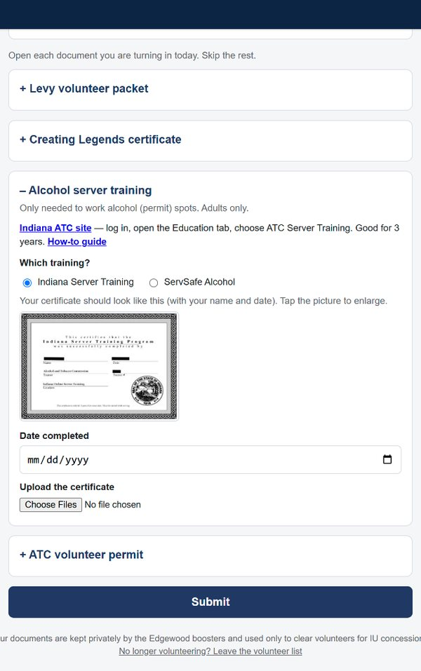
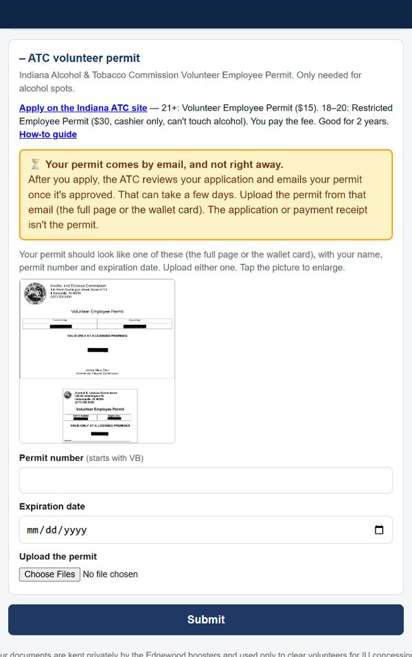
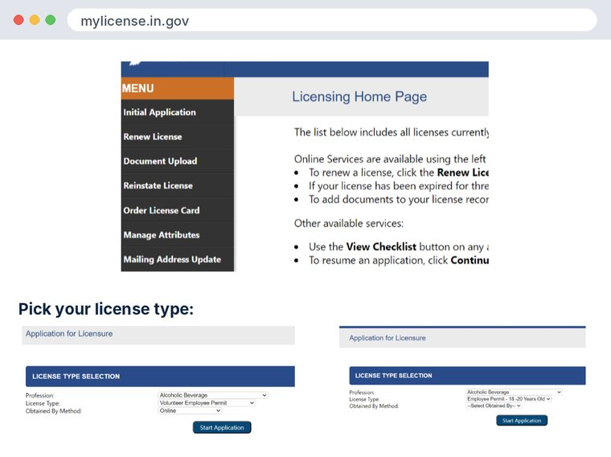
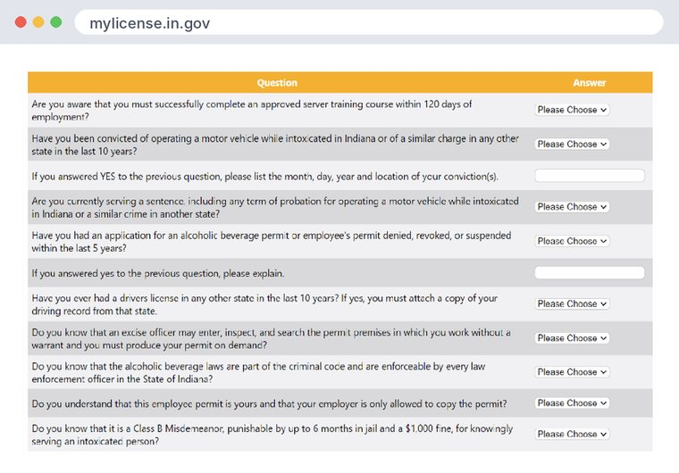
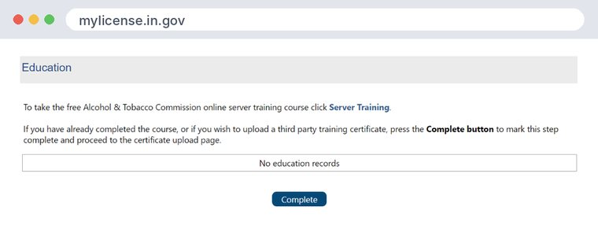
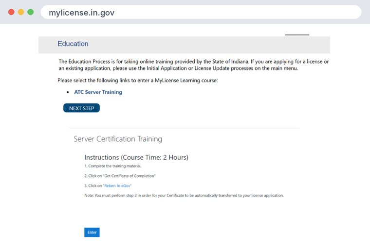

3:05, with narration. Turn on captions (CC) to watch with the sound off. The volunteers shown are made up.
Alcohol server training
On your paperwork page, open Alcohol server training. Take ATC Server Training on the Indiana ATC site (log in, Education tab), or ServSafe Alcohol. It's good for 3 years; there's a how-to guide on the card. Pick which training you took, enter the date, upload the certificate, and tap Submit.

ATC volunteer permit
Apply on the Indiana ATC site. 21+: Volunteer Employee Permit ($15). 18–20: Restricted Employee Permit ($30, cashier only, can't touch alcohol). You pay the fee; it's good for 2 years. The permit comes by email, and not right away: the ATC reviews your application first, which can take a few days. The application or payment receipt isn't the permit. When it arrives, enter the permit number (starts with VB) and expiration date, upload the full page or the wallet card, and tap Submit.

On the ATC site: sign in
Go to mylicense.in.gov. Under Personal Licensing, tap Login to Personal Licensing with Access Indiana. No account yet? Tap Register for an Access Indiana account first.

Start your application
Tap Initial Application in the menu (had a permit before? use Renew License). 21+: Alcoholic Beverage, Volunteer Employee Permit, Online ($15). 18–20: Employee Permit - 18-20 Years Old. Tap Start Application.

Answer the questions
The first question and the last four are Yes. Answer the rest honestly. Had a driver's license in another state in the last 10 years? You'll attach a driving record.

Server training: now or later
On the Education page, tap Server Training to take the free ATC course now (about 2 hours). Or tap Complete to skip it for now. Then upload any documents and pay the fee.

Doing the training later
Sign back in, tap Education, then ATC Server Training. At the end, tap Get Certificate of Completion and save it. That's the certificate you upload to the Hub.

Watch your email for the permit
Your volunteer page reminds you that the permit comes by email. Upload it as soon as it arrives.